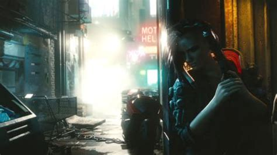
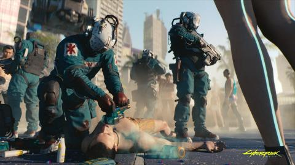
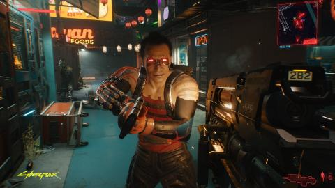
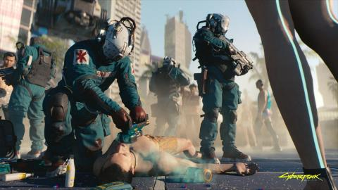
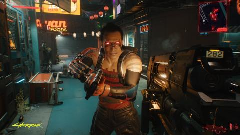
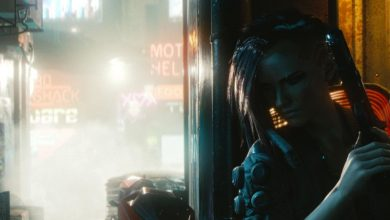

Índice
- Argumento
- Entorno
- Clases y personajes
- Capturas de pantalla
- Requisitos
- Crítica
- Regístrate

Argumento
Cyberpunk 2077 es una historia de acción y aventura en mundo abierto ambientada en Night City, una megalópolis obsesionada con el poder, el glamur y la modificación corporal. Tu personaje es V, un mercenario que persigue un implante único que permite alcanzar la inmortalidad. Podrás personalizar las mejoras cibernéticas, las habilidades y el estilo de juego del personaje para dar forma a un mundo y a una historia que depende de tus decisiones.
Entorno
Adaptado del juego de rol Cyberpunk 2020, se establece cincuenta y siete a�os m�s tarde en la ciudad dist�pica de Night City, California. Es un mundo abierto con seis distritos diferentes, con una perspectiva de primera persona y los jugadores asumen el papel del personaje personalizable llamado V, quienes pueden mejorar sus estad�sticas con experiencia. V tiene un arsenal de armas y opciones para combate cuerpo a cuerpo, los cuales pueden ser modificados.
Se podr� recorrer Night City a pie y con una amplia gama de veh�culos. Cyberpunk 2077 har� gala de una gran verticalidad. El videojuego ofrecer� exploraci�n a nivel de suelo y dado que es una ciudad con muchas alturas y edificios, CD Projekt RED no perdi� la oportunidad de presentar una jugabilidad vertical y con mucha pasi�n por las alturas.
- City Center
- Orgullo de la ciudad, all� se encontrar� el coraz�n de la urbe y las grandes sedes de las corporaciones y sus carteles de brillante ne�n.
- Ser� una zona lujosa, llena de locales con glamour y tiendas no aptas para todos los bolsillos.
- Watson
- Es un antiguo distrito industrial, donde el dinero se mezcla con crimen. Watson est� dominada por una corporaci�n venida a menos, con inmigrantes y personas de diferente procedencia, que buscan en sus bazares y tiendas la forma de salir adelante.
- Westbrook
- Es un peque�o parque tem�tico para los aficionados a Jap�n y su estilo de vida. Seg�n el equipo polaco, es una zona en la que los aficionados a trabajar y jugar duro, se encontrar�n muy c�modos.
- Barrio latino de Heywood
- Es un distrito residencial y suburbano enorme, con problemas raciales y de choques de culturas. Est� controlado por las pandillas, y al parecer, ser� muy peligroso.
- Pacifica
- Separado de la ciudad, este pueblo gigantesco est� abandonado y es el lugar donde operan los grupos criminales m�s duros de Night City. Un sitio en el que la pobreza campa a sus anchas.
- Santo Domingo
- En Night City se consume mucha luz y electricidad, y se necesita una peque�a ciudad industrial para alimentarla. Con enormes plantas de energ�a y decenas de f�bricas, no es un bonito lugar para pasear, por s� el coraz�n indispensable para la urbe que ofrecer� el videojuego.
Clases y personajes
- Solo
- Techie
- Netrunner
- Jackie Welles
- Dexter Deshawn
- Royce
- Doctor Victor
Capturas de pantalla
 



Requisitos
| Minimum | Recommended | High | Ultra | |
| Resolution | 1080p | 1440p | 2160p | |
| GFX Settings | Low | High | Ultra | |
| Processor | Intel i5 3570K / AMD FX-8310 | Intel i7 4790 / AMD Ryzen 3 3200G | Intel i7 4790 / AMD Ryzen 5 3600 | |
| Memory | 8 GB | 12 GB | 16 GB | |
| Graphic Card | NVIDIA GeForce GTX 780 o AMD Radeon RX 470 | NVIDIA GeForce GTX 1060 o AMD Radeon RX 590 | NVIDIA GeForce RTX 2060 o AMD Radeon RX 5700 XT | NVIDIA GeForce RTX 2080S o AMD Radeon RX 6800 XT |
| Storage | 70 GB de espacio dispnible (SSD recomendado) | |||
| Cyberpunk 2077 | ||||
Crítica
Cyberpunk 2077 es una obra �nica y, posiblemente, es el mejor juego de rol de tem�tica ciberpunk y futurista que hemos jugado en la �ltima d�cada, un t�tulo muy especial que da una lecci�n de c�mo debe ser la inmersi�n en un videojuego, de c�mo este medio puede hacer que conectemos de una forma �nica e inalcanzable por el cine o la literatura con nuestro personaje, con las historias que vivimos y los seres que habitan a nuestro alrededor en esta vida paralela que nos ofrece lo nuevo de CD Projekt.
Night City es una ciudad sobrecogedora tanto en lo t�cnico como en lo jugable, y a pasar de que en todo momento nos recordar� que somos unas simples hormigas dentro de esta mole de la humanidad y de que no tiene piedad con nosotros, el arraigo que llegamos a sentir hacia la ciudad, hacia sus calles es alucinante, atrap�ndonos como solo ella puede hacer.
Como amantes del rol, estas sensaciones son �nicas y creemos que para los aficionados del g�nero, Cyberpunk 2077 va a ser colosal y va a proporcionarles unas sensaciones que dif�cilmente pueden logar en otros t�tulos. Sin embargo, esta obra, como los habitantes de Night City, como todos y cada uno de nosotros no es perfecta y tambi�n tiene sus fallos en forma de numerosos bugs y de algunas mec�nicas como el combate cuerpo a cuerpo, demasiado tosco, que hace que el t�tulo chirr�e por momentos y que pueden lastrar la experiencia de todos aquellos que busquen una apuesta m�s redonda a nivel jugable que rolera.
Nota:9.3